日誌CSVダウンロードツール
インストール・使用方法
ケアウイングにログイン、日付入力、ダウンロード、CSV編集等を自動化するツールです。
インストール方法
受信したメールの添付ファイルをダブルクリックしてください。
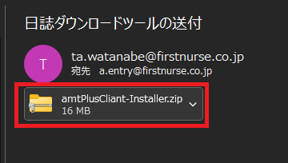「開く」ボタンをクリックしてください。
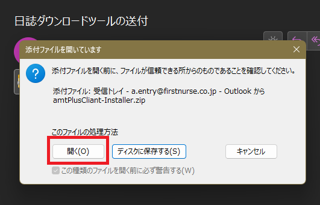表示されたファイルをダブルクリックしてください。
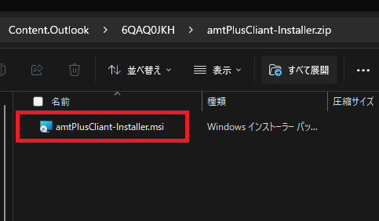「詳細情報」をクリックしてください。
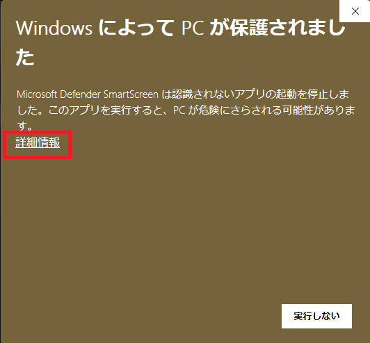「実行」をクリックしてください。
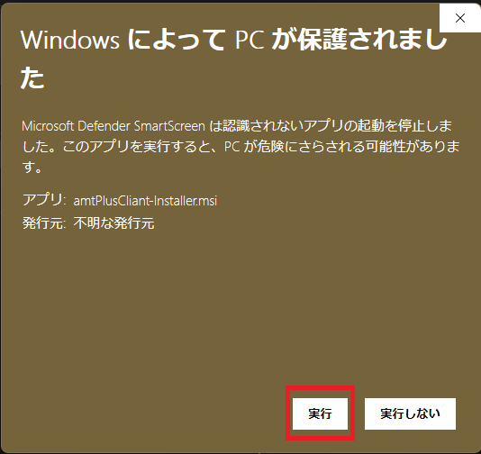「次へ」をクリックしてください。
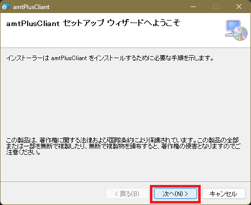「次へ」をクリックしてください。
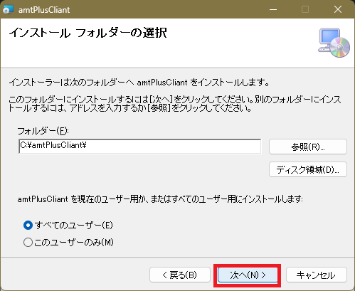「次へ」をクリックしてください。
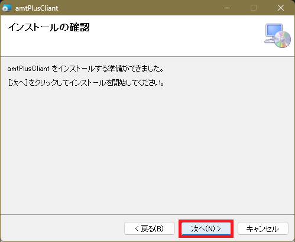「はい」をクリックしてください。
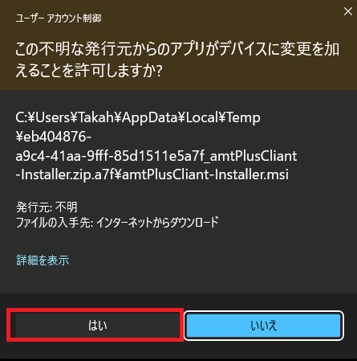インストールが完了しました。「閉じる」をクリックしてください。
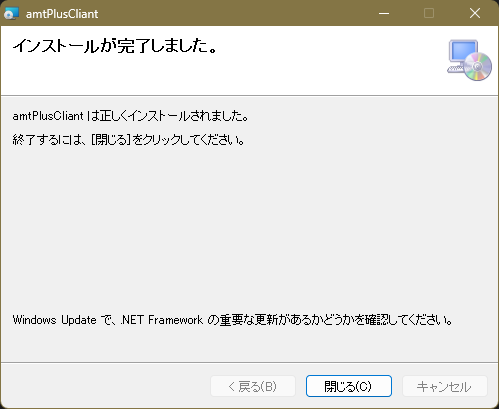デスクトップにアイコンがあることを確認してください。
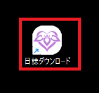使用方法
デスクトップのアイコン「日誌ダウンロード」をクリックしてください。
下記の画面が起動します。
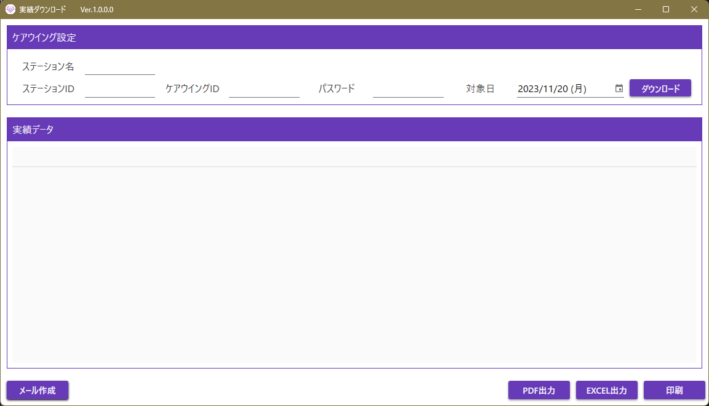各項目の説明は以下の通りです。一度入力すると記憶されるため次回以降の入力は不要となります。
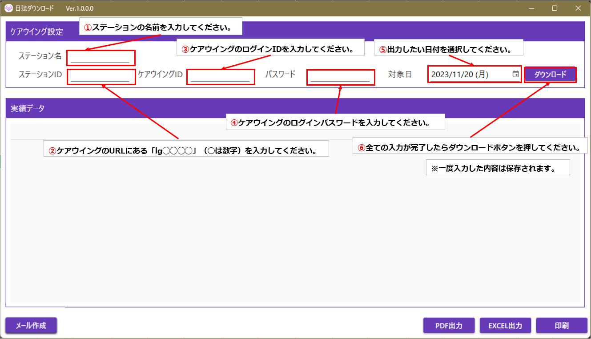全て入力し、ダウンロードボタンを押すと、ケアウイングから情報を取得します。十数秒程かかります。
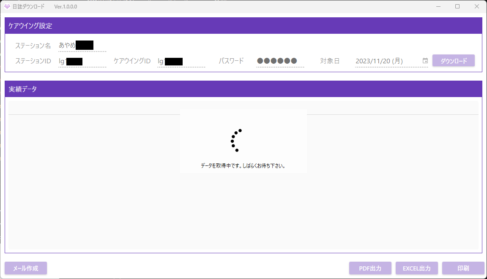実績データが表示されます。内容を確認してください。
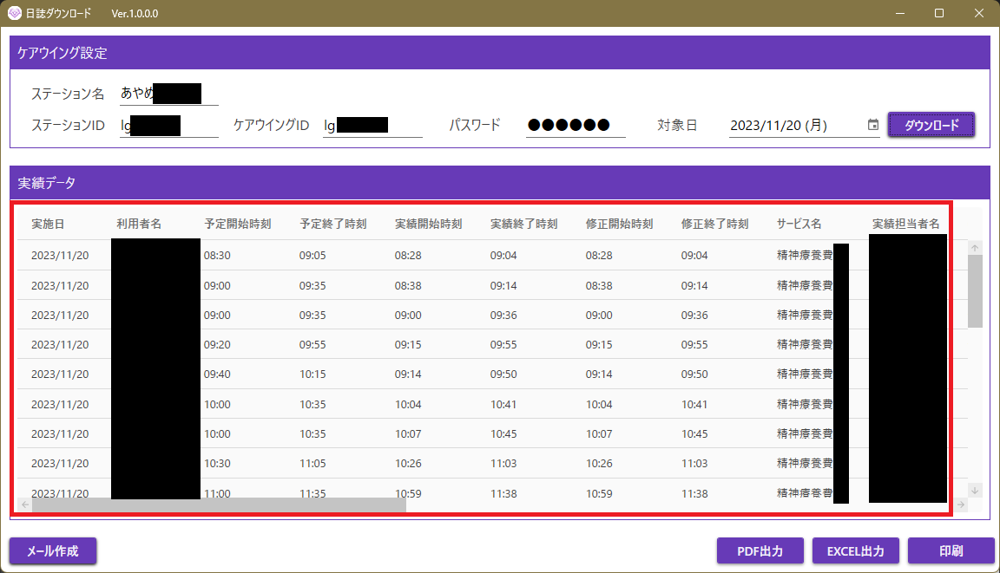印刷ボタンをクリックすると接続されているプリンターから日誌が印刷されます。25件を超えると改ページされます。
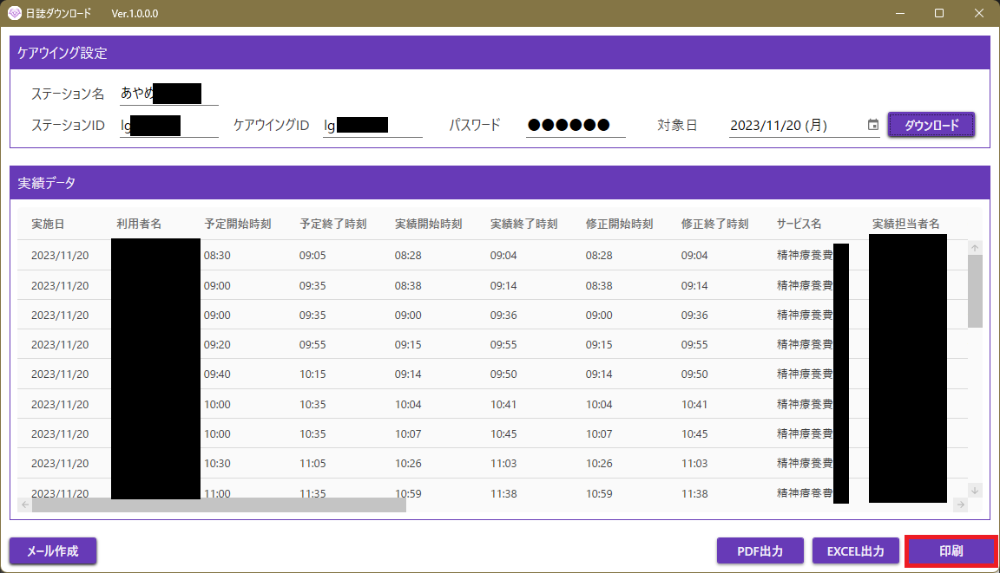↓出力結果
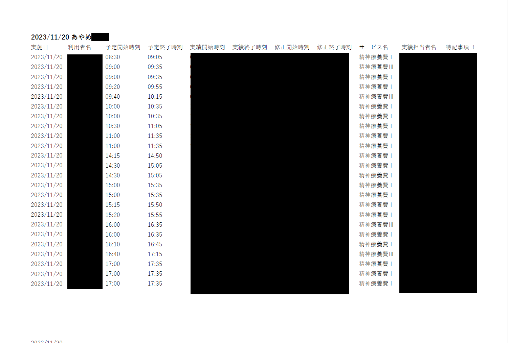PDF出力ボタンをクリックするとPDFとして保存され、エクスプローラーが表示されます。(場所 C:\amtPlusClient\Export\)
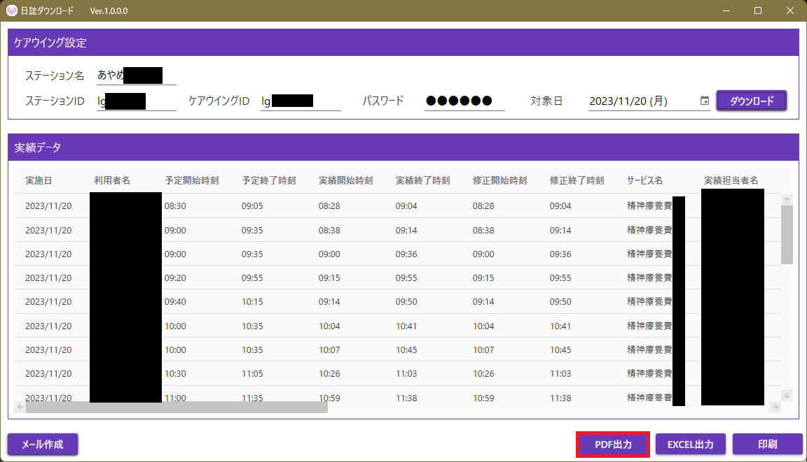↓出力結果
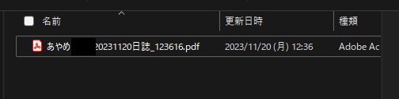Excel出力ボタンをクリックするとExcelファイルとして保存され、エクスプローラーが表示されます。(場所 C:\amtPlusClient\Export\)
↓出力結果
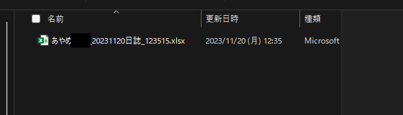メール作成補助機能
規定の出力先と文章を入力した状態でメーラーを開きます。作成した日誌を添付して送付してください。
メール作成ボタンをクリックしてください。
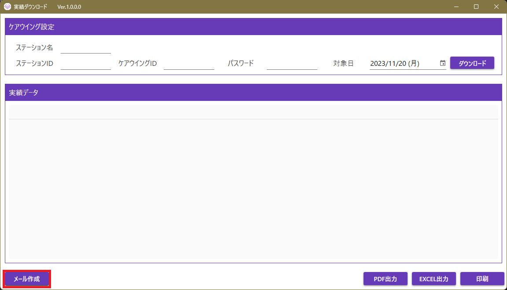初回起動時には下記の画面が出ることがあります。「Outlook」を選択し、「常に使う」をクリックしてください。（表示される画面は多少異なることがあります）
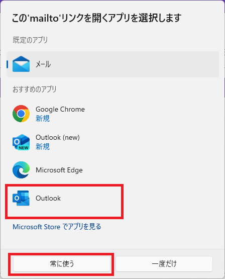宛先や、件名、本文が自動で入力された状態で、メーラーが起動されます。ステーション名や、日付はフォームに入力した内容が反映されます。
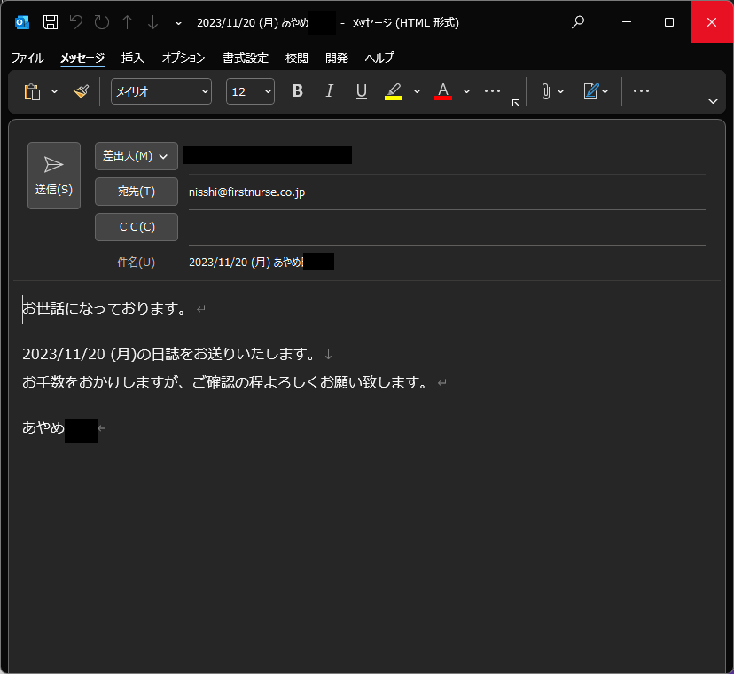最後に作成した日誌を添付して送付してください。